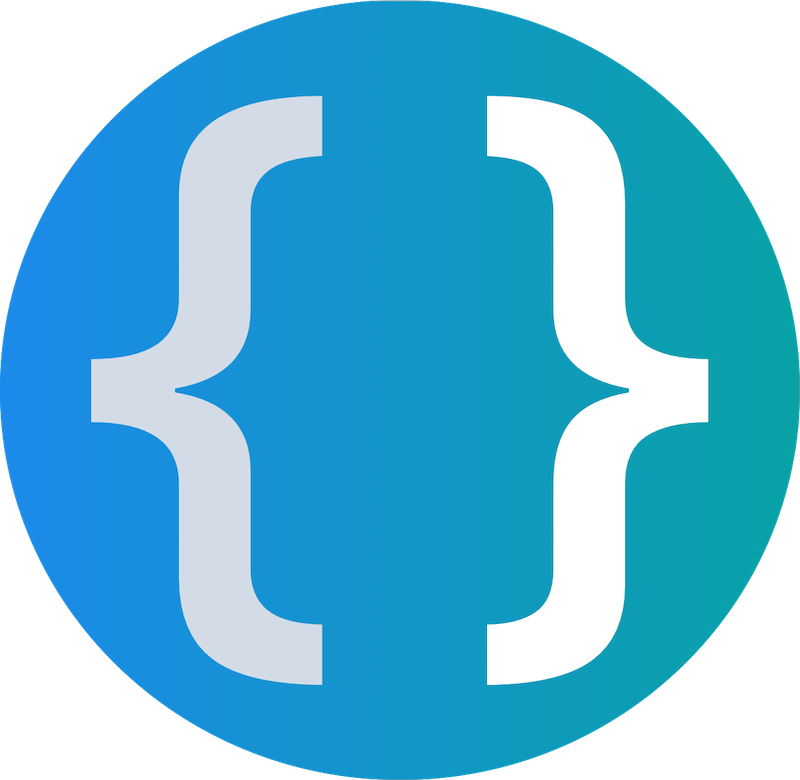
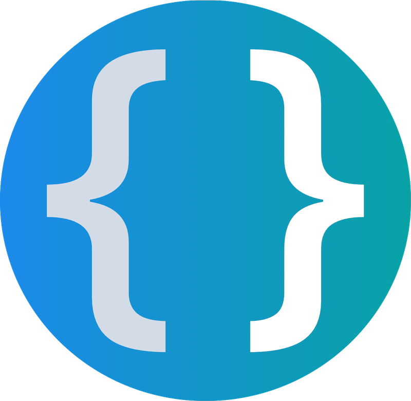

What am I working on?


C-LABS
I began working at C-Labs as a software development intern during the summer of 2016. After graduation, I accepted a full time role
with the company and helped develop solutions for their then parent company TRUMPF, one of the world's
largest providers of machine tools.
Much of my experience has involved creating plugins for the C-DEngine, C-Labs'
state-of-the-art "real" industrial IoT service. Over the course of my two full-time years with C-Labs, I enhanced their software's storage
capabilities, creating ways to store application data in databases such as SQL Server, Oracle, and InfluxDB.
My contributions also include testing and improving their pub-sub messaging system through a Docker test framework and writing comprehensive documentation on various
C-DEngine developer topics.
I even received the opportunity to represent C-Labs internationally at Hannover Messe in Germany, one of the largest industrial-technology trade conventions in the world.
See what C-Labs is up to here and try out their (newly open-source) software that I contributed to
here.
 


INTER.CODES
At the beginning of September 2017, I began working with three other developers on Inter.Codes,
our senior-design project at Gonzaga University. Inter.Codes is a platform established by a small company
named Liquid Crystal Studios, and seeks to serve as an all-in-one solution for software developers. It is a
cloud-based development environment, version control system, and project management suite that aims to
produce collaboration and visibility into all aspects of the development process.
As part of the LCS team, I focused primarily on frontend design and development in Vue.js, building the components of the UI and interaction
with our backend API. After graduation, I took on a larger role as Secretary of Inter.Codes LLC while continuing to contribute
to the development of the user interface. Although we are currently in the process of revamping the site, check out our progress
here.


MUSIC & VIDEO
Since I was young, I've always had a passion for filming and editing video, as well as
producing music. In high school, I played guitar in various bands and later learned
how to produce music electronically in DAWs (Digital Audio Workstations) such as Logic, Ableton Live, and Pro Tools.
During the past couple of years, I've produced music under the name "T.FAR" on SoundCloud as
well as a DJ/Producer duo with my good friend Will Miner called "NERVES". We've performed at several
venues around the Spokane, Washington area, including a theatre festival with a crowd of over 500 people.
Our tracks have been played thousands of times on SoundCloud, with our most popular reaching 14k. Check out NERVES
here.
More recently, I completed a full length album titled "Transitions" along with my friend and fellow musician Kirk Roa.
We spent the course of a year recording, editing, mixing, and mastering 8 different songs that comprise genres such as
rock, blues, jazz, electronic, and acoustic. Listen to our album here.
In addition to solely producing music, I've filmed and edited a collection of guitar covers on YouTube, with
one of my videos grossing 25,000 views. Check out my channel
here.